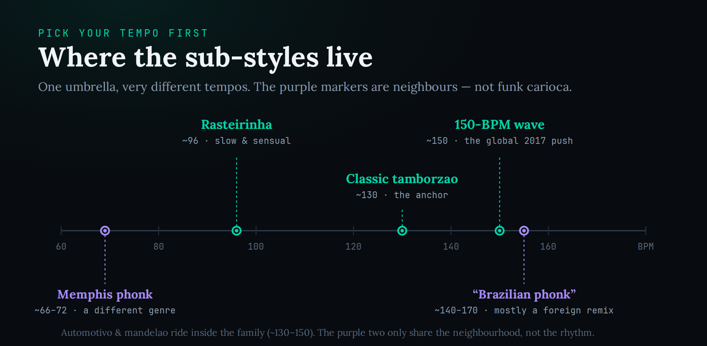
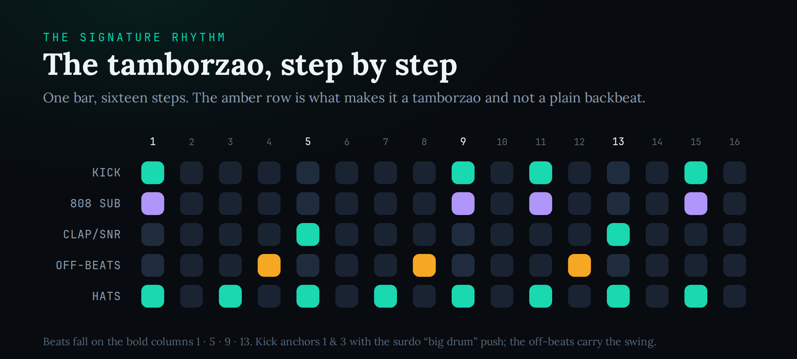
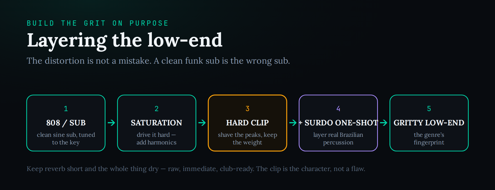

Brazilian funk — funk carioca or baile funk — is a family of dance music built on one rhythmic cell, the tamborzão: a syncopated, surdo-derived kick-and-clap groove with a deliberately overdriven sub, born in Rio de Janeiro’s favelas. Classic tracks sit around 130 BPM; the modern global wave runs at 150. The single decision that separates an authentic track from a tourist’s pastiche is whether you programmed that rhythm yourself and chose your sub-style on purpose. Build the tamborzão first; everything else is flavour.
You have heard it whether you know the name or not: the punchy, syncopated Brazilian beat under a TikTok edit, a car-window clip, a J Balvin or Anitta crossover, a workout reel. Brazilian funk went from a regional favela sound to one of the fastest-rising production trends on earth, and English-language producers are scrambling to make it. Most of them get it wrong in exactly the same way — they load a loop pack, drop an 808 under it, and call it done. This guide takes the harder, better road: you will build the beat by hand, understand where its grit comes from, and — most importantly — learn which Brazilian funk you are actually making, because the umbrella hides five very different styles at very different tempos.
The history matters here more than in almost any other genre, because the sound is the history. We will cover what funk carioca actually is (and the two genres it is constantly confused with), the map of sub-styles and the tempo each one lives at, how to program the tamborzão step by step, how to build the signature distorted low-end on purpose, how to layer real percussion for authenticity, how to write the vocal chops and chants that carry the whole style, and finally how to tell Brazilian funk apart from Brazilian phonk. If you are brand new to beatmaking it is worth reading how to make a beat first for the mechanical basics; everything below assumes you can already program a pattern in a DAW.
What Brazilian Funk Actually Is (and Isn’t)
The first thing to clear up is the name, because it is a trap. Brazilian funk has nothing to do with James Brown, Parliament-Funkadelic, or the syncopated bass-and-horn funk that Americans mean when they say the word. The Portuguese “funk” is a false friend. What you are making is funk carioca — “funk from Rio” — also called baile funk or, in Brazil, simply funk. It is closer to Miami bass and electro than to anything in the American funk lineage, and if you go in expecting slap bass and a wah-wah guitar you will build the wrong record entirely.
The genre was born in the favelas of Rio de Janeiro — the city’s predominantly Afro-Brazilian working-class neighbourhoods — where DJs threw open-air parties called bailes. Through the late 1970s and 1980s they spun imported soul, electro, freestyle and, crucially, Miami bass: the booming, 808-driven, deliberately sleazy dance music coming out of Florida. DJ Marlboro — Fernando Luís Mattos de Matta — is widely credited as the genre’s godfather. His 1989 album Funk Brasil, which reworked Miami bass and freestyle with Portuguese lyrics, is usually treated as the moment funk carioca became its own thing rather than a tropicalised import. Marlboro has said his key influence was Afrika Bambaataa’s “Planet Rock,” and you can hear that electro DNA in the earliest tracks.
What turned funk carioca from a localised remix scene into an unmistakable genre was the arrival of its signature rhythm, the tamborzão, which crystallised in the late 1990s — commonly credited to DJ Luciano Oliveira around 1998, building on percussion loops circulating among Rio producers. The word means “big drum,” and that is the point: producers took the electronic 808 kit and fused it with Afro-Brazilian percussion patterns drawn from capoeira, Candomblé ritual and the deep surdo drum, giving the beat a fatter, more syncopated, distinctly Brazilian swing. That fusion is the whole genre in miniature — an imported machine groove re-rooted in Black Brazilian rhythmic tradition. Keep that in mind, because it is also the line between making funk and merely borrowing its surface.
A word on respect, and it is not throwaway framing. Funk carioca is a living culture tied to specific communities that have been marginalised, criminalised, and at times literally policed for making this music — for decades funk in Rio was handled by the public-security apparatus rather than the culture department, and bailes were shut down and raided. When you make a funk track you are working in a tradition built by poor, mostly Black Brazilians who rarely get credited when the sound goes global. You do not need to be Brazilian to make it, but you do need to make it like someone who learned the history rather than someone who lifted a hat off a stranger. In practice that means learning where the beat comes from, crediting collaborators, paying the performers you work with, and not exoticising the culture. Music that feels like it belongs to a community is also, not coincidentally, the music that community protects and shares — the opposite of a disposable trend clip.
The Map of Sub-Styles — Pick Your Tempo First
Here is the single most useful thing this guide can tell you, and almost no English tutorial says it: “Brazilian funk” is not one beat. It is an umbrella over a dozen sub-styles that live at wildly different tempos and feel like different genres. Before you program a single hit, decide which one you are making — because the tempo you pick determines the drum spacing, the vocal cadence, and the entire energy of the track. Getting this wrong is why so many outsider attempts sound generically “Brazilian” without sounding like anything in particular.

Classic funk carioca / tamborzão (~125–135 BPM). The anchor. This is the surdo-derived tamborzão at its home tempo — around 130 BPM was the standard for decades. If you want to learn the genre properly, start here; everything else is a variation on this pocket. It is punchy, syncopated, and loop-driven, built to leave space for an MC to command the crowd.
Rasteirinha (~90–105 BPM). The slow, sensual branch. Rasteirinha drops the tempo and leans on dembow-adjacent swing, borrowing from reggaeton and Bahian axé and layering real hand percussion — pandeiro, surdo, agogô. If the rhythmic feel here reminds you of dancehall, that is not an accident; the same dembow cell underpins a lot of Latin dance music, and it is worth studying how to make reggaeton to hear how the two genres share a heartbeat while diverging in everything else.
The 150-BPM wave (~148–152 BPM). This is the tempo most non-Brazilian producers actually mean today. Around 2017–2018 a new generation of Rio DJs — Rennan da Penha, Polyvox, Iasmin Turbininha among them — pushed the classic groove up to 150 BPM because dancers responded to the faster pace. One of its signatures, the “tambor Coca-Cola,” was born when Polyvox sampled his son hitting a Coca-Cola bottle against a door. The 150 wave is the same tamborzão logic with tighter note lengths and more forward momentum, and it powers most of the global crossover moment. Interestingly, the Rio scene has since partly swung back toward 130 for TikTok-optimised tracks, so do not assume faster is automatically more current.
Automotivo, mandelão and bruxaria (~130–150 BPM). These are the harder, São Paulo-centred strains built for paredão car sound-systems and street fluxos. Mandelão (also called Ritmo dos Fluxos) is minimalist and raw, with blown-out sub and repetitive chanted lyrics. Bruxaria — “witchcraft funk” — piles on aggressive distortion and piercing high-pitched “tuin” sounds for a genuinely menacing, horror-adjacent feel. Automotivo overlaps heavily with both and is, confusingly, the style the West often relabels as “Brazilian phonk.” We will come back to that.
Ostentação, MTG, brega funk and the rest. There are many more — ostentação (São Paulo’s luxury-flexing branch, bright synths and Auto-Tune), MTG or montagem (sample-collage edits built from chopped vocal snippets and DJ shouts), brega funk from Recife (melodic and off-beat), trap-funk hybrids, and regional scenes in Belo Horizonte and beyond. You do not need to master all of them. You need to know they exist so you can choose deliberately instead of accidentally landing between two of them and sounding like neither. The rising-trend, high-share sound that fills global feeds sits mostly in the automotivo / 150-wave / MTG cluster — but the tamborzão underneath is the same cell in every case, which is exactly why we build that first.
Build the Tamborzão by Hand
This is the core lesson. If you take one thing from this guide, take the tamborzão. It is a one-bar, sixteen-step pattern, and once your ear and your fingers know it you can produce any sub-style by changing tempo and flavour. Set your DAW to 130 BPM in 4/4 in a minor key, open a step sequencer or drum rack, and load a hard, clipped kick, a snappy clap or tight snare, a shaker or closed hat, and an 808 sub.

Start with the skeleton. Put the kick on beats 1 and 3 and a clap or snare on beats 2 and 4. That is a plain backbeat, and on its own it is not funk — it is the frame you hang the real rhythm on. The tamborzão lives in what you add next. Give the kick a syncopated push: an extra hit just after beat 3 (the surdo “and”) and a pickup near the end of the bar that leans back into the downbeat. That doubled, off-grid kick figure is the “big drum” the genre is named for, and it is why a funk carioca beat rolls forward instead of sitting flat.
Now the part that actually makes it a tamborzão and not a generic loop: the off-beat percussion. Add extra clap, rimshot or tom hits between the main beats — on the “a” of the count, in the gaps the backbeat leaves open. In the grid above, that is the amber row, and it is doing the heaviest lifting of any element. This is syncopation in the literal sense: accents landing where the ear does not expect them. It is worth internalising the concept beyond this one genre — our guide to groove and swing covers why off-grid placement and a little timing looseness are what make a machine pattern feel human. Do not quantise the life out of it. The best funk beats feel slightly messy; a hair of swing or manual nudging on the off-beats is the difference between a groove and a grid.
Finish with the hats. Program driving eighth notes across the whole bar for momentum, or push to sixteenths for the more relentless modern feel. Keep them fairly dry and let them ride under everything. Finally, place the 808 sub in lockstep with your kick — same hits, tuned to the root of whatever minor key you are working in — so the low end and the kick read as one weight rather than two competing thumps.
Two things separate a convincing tamborzão from a stiff one, and both are about feel rather than notes. The first is swing: nudge the off-beat percussion a few ticks off the grid, or apply a light shuffle, so the pattern breathes. Programmed dead-straight, the tamborzão sounds like a drum-machine demo; loosened slightly, it sounds like Rio. The second is timbre. The historical tamborzão gets its character from specific sampled hits — the deep, resonant surdo, the sharp tamborim, the metallic agogô — so even a fully programmed pattern comes alive when you swap generic 808 percussion for samples with that Afro-Brazilian voice. The grid in the figure is a starting voicing, not scripture; every producer bends it, and you should too once it is in your hands. The point is to own the pattern so completely that you can reshape it, not to copy nine lit cells and stop.
The Gritty Low-End — Distort It on Purpose
Here is where most clean, well-behaved productions announce themselves as outsider attempts. In funk carioca, the low end is supposed to be overdriven. The blown-out, clipped, gritty sub is not a mixing accident or a sign of an amateur — it is the genre’s sonic fingerprint, a direct inheritance from decades of music engineered to hit hard through cheap favela sound-systems and, later, through phone speakers on social feeds. A pristine, hi-fi funk sub is the wrong sub. If your low end sounds polite, you have not finished.

Build it in stages. Start with a clean sine or triangle 808, tuned precisely to your track’s root note so it locks with the melody instead of fighting it. On its own a sine sub is round and dull — the perfect blank canvas. Then drive it with saturation. Saturation adds harmonic content up the spectrum, which does two jobs at once: it gives the bass grit and aggression, and it adds upper harmonics that let the sub cut through on small speakers that cannot physically reproduce the fundamental. If saturation is a new tool for you, our guide to using saturation walks through drive, character and the difference between warmth and destruction; here you want to lean toward the destructive end.
It helps to know which flavour of distortion you are reaching for, because they colour the sub differently. Gentle tape or tube saturation warms and thickens without changing the shape much — useful, but rarely enough for funk on its own. A waveshaper or a dedicated distortion pushes harder and adds edge. And a hard clipper is the most aggressive of all: it flatly chops the peaks off the waveform. For funk you generally want to stack them — saturate for harmonic body, then clip for the blown-out wall — rather than relying on any one. A dedicated saturator or clipper gives you more control than a stock waveshaper, and the round-up of the best 808 plugins covers instruments and processors built for exactly this kind of aggressive, tuned low end.
So hard clip the sub as the final stage. Clipping shaves off the transient peaks, which lets you push the whole thing louder without the level meter running away from you, and it flattens the sub into a solid wall of low-frequency weight — the “blown-out” quality you hear on automotivo and bruxaria tracks especially. Clip more than you think you should; the clip is the character, not a flaw to minimise. This is the same tuning-and-saturation discipline that underpins trap 808s, and if you want to go deeper on shaping a sub from a sine wave up, making 808s from scratch is the companion read — the difference in funk is simply that you push the distortion further and worry less about pristine sub extension.
One practical note on mixing the grit: keep it deliberate, not accidental. Reach for the distortion as an instrument, automate it, and commit to it — a track that is uniformly blown out with no dynamics is just loud, whereas a track that rides the grit for impact and pulls back for the drop is arranged. The goal is raw and immediate, dry rather than washed in reverb, and unmistakably designed to move a body across a floor.
Layer Real Percussion for Authenticity
A programmed 808 kit will get you a functional beat. What makes it sound Brazilian rather than generic-hard is layering real percussion over the top. The tamborzão’s signature timbres come from Afro-Brazilian instruments — the surdo, the atabaque, the tamborim, the agogô — and the fastest route to authenticity is to layer a genuine percussion sample or loop over your programmed grid rather than trying to synthesise everything from a drum machine.
Each instrument has a job, and knowing the roles helps you place them rather than dumping a loop and hoping. The surdo is the deep, booming drum that doubles and reinforces your kick — the literal “big drum” of the tamborzão. The tamborim is a tiny, high, sharp frame drum that cuts through with rapid off-beat accents. The agogô adds a metallic, bell-like ping that marks the pattern, and shakers and the ganzá keep a continuous granular motion under the hats. You do not need a full percussion ensemble — a surdo layered on the kick and a tamborim or agogô riding the off-beats will already push a programmed pattern a long way toward sounding genuinely carioca.
The practical method: keep your programmed kick, clap and 808 as the rhythmic and low-end backbone, then add one or two loops of live-feel Brazilian percussion sitting on top for texture and swing. Search sample libraries for “Brazilian percussion,” “tamborzão,” “surdo” or “baile funk” and audition loops around 130 BPM, since drum loops at that tempo will usually already carry the tamborzão feel. If you combine loops, treat them like a kit — one loop carrying shakers and toms, another carrying claps — so they flesh each other out instead of clashing. When you find a phrase you love but it does not quite fit, chop it: our guide to chopping samples shows how to slice a loop to your grid and rearrange the hits, which is exactly how you make a borrowed percussion loop feel like your own programming.
Sampling is central to this genre’s whole history and worth understanding as a craft in its own right — funk carioca was built on flipping and re-contextualising records, and a working knowledge of what sampling actually is, legally and technically, will keep you out of trouble as your tracks travel. If you plan to release commercially, clear anything recognisable or use royalty-free packs; a viral funk edit built on an uncleared sample is a takedown waiting to happen. The ambition here is the one that separates a producer from a loop-buyer: even when you start from a sample, understand the pattern well enough that you could rebuild it by hand.
Vocal Chops, Shouts and Stabs
Funk carioca is a vocal genre. The MC is not decoration — across almost every sub-style, a strong vocal presence is what turns a beat into a track, and the same instrumental can become megafunk, brega funk or bruxaria depending on how the voice sits on it. Even if you are producing instrumentals for others, you have to build with vocals in mind: leave space, design for call-and-response, and think in hooks.
The topline language is chant, not verse. Write short, repeatable phrases — one or two lines that a crowd could shout back after hearing them once. Place the heaviest syllables on the downbeat or on a kick hit so the words and the drums reinforce each other. Portuguese carries this beautifully because of its strong open vowels and clipped, percussive syllables; even if you do not write in Portuguese, study how funk MCs use vowel sounds as rhythmic hits and shorten words for energy. Producers lean heavily on chopped vocal snippets, DJ shouts, stabs and one-liners, especially in MTG and automotivo, where the “melody” is often just a fragment of a pre-existing vocal reframed into a new hook. This is where sampling craft and vocal production meet: a chopped shout, pitched and gated to the grid, functions as both a hook and a percussion element. Keep the treatment aggressive and dry to match the drums — heavy reverb and delay will pull the voice out of the pocket and soften the very impact you are building toward.
Structurally, think like a DJ. Tracks are short, loop-driven and functional: a common shape is a quick intro, a short verse, a hook, another verse, a hook, a drop, and an extended hook to close. The hooks are the moments the crowd owns, so build the arrangement around them and give DJs clean loop points to work with. This loop-and-chant logic is common across the modern global-percussion family — you will recognise the same call-and-response, hook-forward instinct in amapiano and afrobeats, which is part of why these styles cross-pollinate so easily on today’s dancefloors.
Arrangement, DJ-Function and Mixing the Grit
Arrangement in funk is ruthless and minimal. Because the music is made for bailes and for rapid DJ mixing, tracks favour tight loops, fast drops, and repetition over long evolving structures. Keep your harmony sparse — often a single minor-mode chord loop, a short stab, or just the tuned 808 carrying the bottom. Add baile signatures for energy and transitions: sirens, air-horns, vocal shouts, sudden mutes and risers that telegraph the drop. The drop itself should arrive quickly and hit hard; the whole track is engineered to be functional on a loud system and instantly legible in a fifteen-second clip.
Think of the arrangement as serving the room rather than the album. A baile DJ needs clean four- or eight-bar loop points to mix in and out, a recognisable hook to bring the crowd in, and a drop that resets the energy — so structure your track as a sequence of loopable blocks rather than a through-composed piece. Sudden full-bar mutes right before the drop are a genre signature: cut everything for a beat, let the tension hang, then slam back in. These are small arrangement moves, but they are the difference between a loop and a track that actually works on a floor or in a feed.
On the mix, the operating principle is “hard, dry, and up-front.” Sidechain your supporting elements to the kick so the low end stays punchy and the sub has room to breathe. Keep the hats and percussion crisp and present rather than tucked back — the driving hats are part of the momentum, and mixing them too politely kills the drive; if you are unsure how much top end to give them, our guide to mixing hi-hats covers level, EQ and saturation for exactly this kind of forward, energetic percussion. Everything wants to feel immediate: minimal reverb, short tails, and a master that is loud and clipped rather than delicately dynamic. Do not chase audiophile cleanliness. The aesthetic target is a track that sounds like it is being pushed slightly too hard — because it is, on purpose.
Brazilian Funk vs Brazilian Phonk — Know Which One You’re Making
This is the disambiguation that will save you from the most common and most embarrassing mistake, and it is also — because so many searchers are confused about it — the knowledge that makes you sound like you actually know the genre. Brazilian funk and “Brazilian phonk” are not the same thing, and conflating them is the fastest way to mark yourself as a tourist.
Phonk, in its original sense, is an American genre: lo-fi, cassette-grit rap rooted in 1990s Memphis tape culture (Three 6 Mafia, the chopped-and-screwed feel), revived online in the 2010s. Its high-energy offshoot, drift phonk, runs fast and leans on distorted 808 cowbells and horrorcore atmosphere. That whole lineage is a different tradition from funk carioca, and we cover it in full in how to make phonk music. If you are chasing the cowbell-driven, Memphis-descended sound, that is the guide you want — not this one.
So what is “Brazilian phonk”? Here the truth is more interesting than the label. What the West markets as Brazilian phonk is, for the most part, a foreign-driven fusion that grafts drift-phonk signatures — distorted 808 cowbells, blown-out maximalist mixing — onto tamborzão-leaning drum programming, usually running somewhere between 140 and 170 BPM. The style was popularised online from around 2023, notably by a Norwegian producer working under the name Slowboy, and the label is barely used in Brazil at all. In Brazil, the music that outsiders call “Brazilian phonk” is more accurately funk automotivo — and Brazilian sources are blunt that the “phonk” tag is often a misnomer, since the underlying rhythm belongs to funk automotivo, not to phonk or drift phonk. Some Brazilian producers have gone further and called the phonk reframing a whitewashing of their culture — the pieces picked and polished for a global audience that never had to go to a baile or watch one get shut down by police.
You do not have to take a side in that argument to produce responsibly, but you do have to know which record you are making. If you want the genuine article — the surdo-derived tamborzão, the Portuguese chants, the favela lineage — you are making funk carioca, and this guide is your map. If you want the cowbell-forward, TikTok-workout hybrid, you are making something closer to funk automotivo dressed as phonk, and you should build it knowingly and credit the funk carioca rhythm you are borrowing rather than pretending it is a phonk invention. Either way, name it honestly to yourself before you start, because the tempo, the drum programming and the sound design all fork from that single decision. Hold the line between the two and you will already be ahead of most of the internet.
Build the Skill: 3 Drills
Run these in order. The first gets the classic tamborzão into your hands, the second teaches you to reshape it into a modern hard style, and the third builds a full track for the global wave.
- Set your DAW to 130 BPM in a minor key and load a hard clipped kick, a clap or snare, a shaker or closed hat, and a sine 808.
- Program the skeleton: kick on beats 1 and 3, clap on 2 and 4.
- Add the surdo push (an extra kick just after beat 3) and off-beat percussion hits between the main beats — the syncopation that makes it a tamborzão.
- Add driving eighth-note hats and lock a tuned 808 to the kick.
- Nudge the off-beats off the grid by ear until the loop breathes. Do not fully quantise — confirm it rolls forward before adding anything else.
- Take your 130-BPM loop and push the tempo toward 145–150 BPM.
- Strip the arrangement down — fewer elements, more space, harder impact.
- Drive the 808 hard with saturation, then hard clip it until the sub reads as a solid blown-out wall.
- Add a single aggressive high-pitched “tuin”-style stab or a distorted vocal chop as the hook.
- Sidechain everything to the kick. Aim for menacing, minimal and speaker-shaking, not busy.
- Set your project to 150 BPM and tighten your tamborzão note lengths for forward momentum.
- Layer a real Brazilian percussion loop — surdo, tamborim, agogô — over your programmed kit.
- Write a short chantable hook from chopped vocal one-shots placed on the kick hits.
- Arrange it DJ-style: an 8-bar intro, a 16-bar build into a fast drop, a 32-bar main loop with an extended hook, and clean loop points. Add sirens and a riser into the drop, and a full-bar mute right before it.
- Master it loud and clipped — a raw, club-ready, feed-ready result rather than a delicate dynamic mix.
Frequently Asked Questions
It depends on the sub-style. Classic funk carioca and the tamborzão sit around 125–135 BPM, with 130 as the historical sweet spot. Rasteirinha is slower, roughly 90–105 BPM. The modern global wave that most non-Brazilian producers mean today runs at about 150 BPM (created around 2017–2018). Automotivo and mandelão live in the 130–150 range. Pick your sub-style first and the tempo follows.
The tamborzão is funk carioca’s signature drum pattern — the name means “big drum.” It is a syncopated, surdo-derived groove: a kick anchoring beats 1 and 3 with an off-grid push, clap or snare on 2 and 4, and crucially a layer of off-beat percussion hits that create the swing, all anchored by a deliberately overdriven 808 sub. It crystallised in the late 1990s, fusing Afro-Brazilian percussion traditions with the electronic Miami-bass kit. It is the one rhythm to learn before anything else in the genre.
No — it is the genre. The blown-out, clipped, gritty low end is funk carioca’s sonic fingerprint, inherited from music engineered to hit hard through cheap sound-systems and phone speakers. A clean, hi-fi funk sub sounds wrong. Build the grit deliberately with saturation and hard clipping rather than treating it as something to fix in the mix.
No. Brazilian funk (funk carioca) is a Rio-born genre built on the tamborzão. “Brazilian phonk” is largely a foreign-made fusion that grafts drift-phonk cowbells and blown-out mixing onto tamborzão-style drums at 140–170 BPM; the label is barely used in Brazil, where the underlying rhythm is more accurately funk automotivo. If you want the cowbell-driven Memphis-descended sound, that is phonk, covered in our separate phonk guide. Know which one you are making before you start.
The Portuguese “funk” is a false friend. Funk carioca has no connection to James Brown-style American funk. The name comes from the “funk parties” (bailes) where Rio DJs originally spun imported soul and funk records; the term stuck even as the music evolved into something built on Miami bass, electro and Afro-Brazilian percussion. It is closer to electronic bass music than to anything in the American funk tradition.
You can program a functional tamborzão from an 808 kit, but layering real Brazilian percussion — surdo, tamborim, agogô, or a “Brazilian percussion” loop at around 130 BPM — is the fastest route to authenticity. The best approach is to keep your programmed kick, clap and 808 as the backbone and add live-feel percussion loops on top for texture and swing. Chop and rearrange those loops so they lock to your grid rather than sitting on top as an obvious drop-in.
Any modern DAW works — the genre is about the rhythm and the grit, not a specific tool. FL Studio is popular for its fast step sequencer, which suits the loop-and-chop workflow, but Ableton Live and Logic are equally capable. What matters is a solid step sequencer for programming the tamborzão, a good sampler for chopping percussion and vocals, and a saturator plus a clipper for the low end.
Program the tamborzão by hand instead of dropping in a loop, choose a specific sub-style and its tempo on purpose, layer real Brazilian percussion, distort the low end deliberately, and write short chantable hooks with the syllables locked to the drums. Above all, learn the history: funk carioca is a living Afro-Brazilian favela culture, and tracks made with knowledge and respect — crediting collaborators, paying performers, not exoticising — are the ones that sound like they belong rather than like a trend clip.